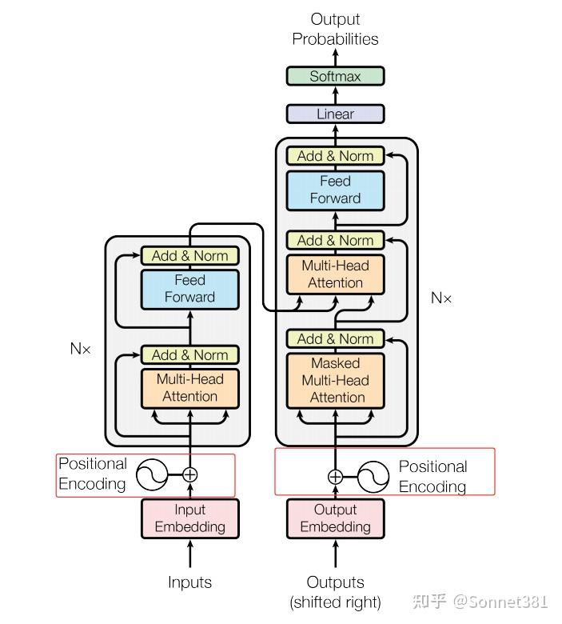
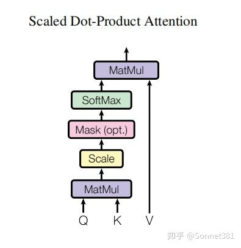
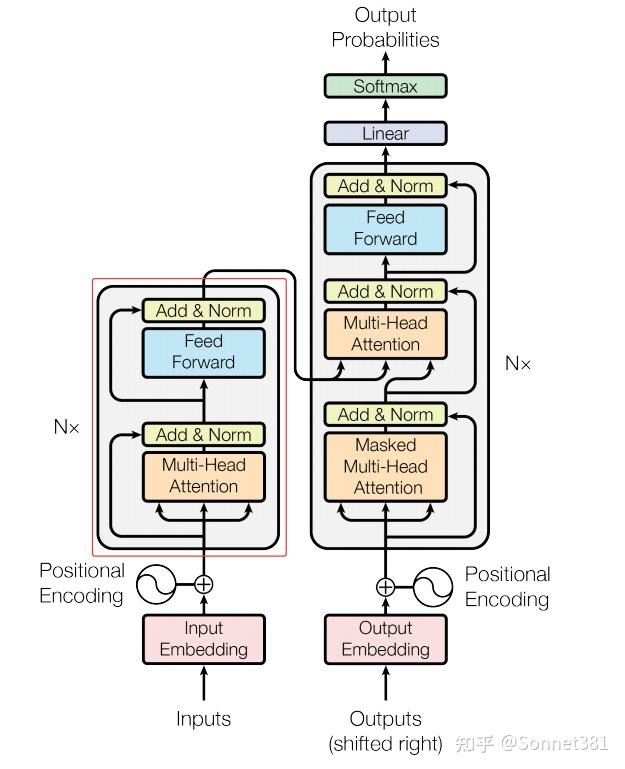
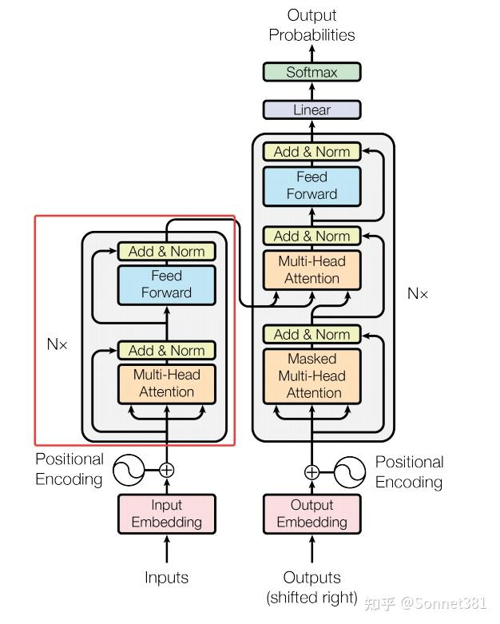
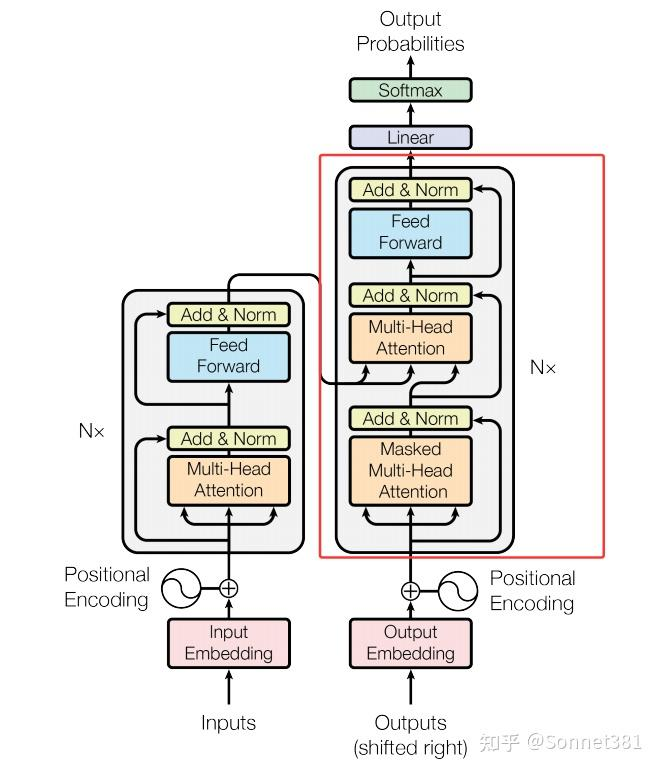
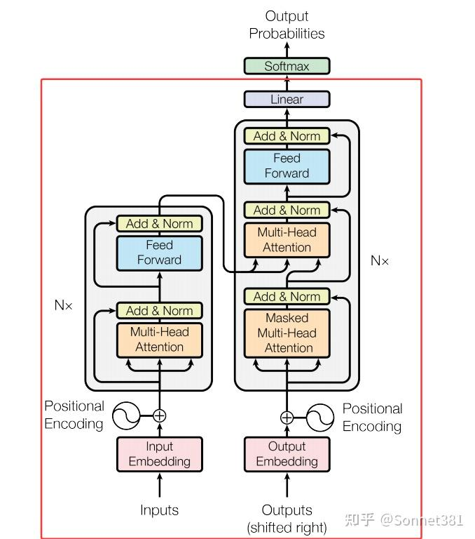

從0手搓Transformer（代碼拆解篇）
Transformer 模型代碼拆解
Transformer 模型代碼拆解
- Positional Encoding（位置編碼）
- Multi‑Head Attention（多頭注意力）
- Feed Forward Network（前饋網絡）
- Transformer Encoder Layer（Transformer 編碼器層）
- Transformer Encoder（Transformer 編碼器）
- Transformer Decoder Layer（Transformer 解碼器層）
- Transformer Decoder（Transformer 解碼器）
- Transformer Model（Transformer 模型）
- mask function（掩碼函數）
- Example usage（示例用法）
Transformer-from-Scratch
論文《Attention Is All You Need》的純 PyTorch 復現
A clean PyTorch re‑implementation of the Transformer architecture described in Attention Is All You Need
簡介
本項目定位為 AI論文復現 / 從零實現 Transformer。 代碼遵循原論文的模塊劃分，包含位置編碼、多頭注意力、前饋網絡、編碼器‑解碼器等全部組件，並附帶詳細的中文拆解文檔與英文註釋，方便學習與二次開發。
特性
- 純 PyTorch：無第三方高階框架依賴，便於閱讀與修改
- 模塊化：各子模塊拆分清晰，可單獨測試
- 批量優先 (batch‑first)：符合 PyTorch 常用數據佈局
- 可復現：默認超參數即能在 CPU / 單卡 GPU 上跑通示例
- 完整註釋：中英雙語文檔 + 代碼行級英文註釋
文件結構
.
├── transformer/ # 核心代碼
│ ├── PostionalEncoding.py # 正弦位置編碼
│ ├── MHA.py # 多頭注意力
│ ├── FFN.py # 前饋網絡
│ ├── Encoder.py # 編碼器
│ ├── Decoder.py # 解碼器
│ ├── create_mask.py # 掩碼生成函數
│ ├── model.py # Transformer模型
│ ├── test.py # 測試腳本
│ └── Transformer.ipynb # 完整實現
├── docs/
│ ├── transformer_arxiv.pdf # 原論文
│ ├── Deep-Analysis.md # 深度解析
│ └── code‑dasm.md # 代碼拆解文檔
├── examples/
│ └── exam.py # （歡迎來補充）
├── LICENCE.md
└── README.md
環境依賴
- Python ≥ 3.9
- PyTorch ≥ 2.0
- tqdm（可選，用於進度條顯示）
pip install torch tqdm
快速開始
import torch
from transformer.model import Transformer
from transformer.mask import create_padding_mask
# 假設詞表大小各 10 k，序列長度 src=10 / tgt=12
model = Transformer(src_vocab_size=10000,
tgt_vocab_size=10000,
d_model=512,
n_heads=8,
d_ff=2048,
num_layers=6)
src = torch.randint(0, 10000, (32, 10)) # (batch_size, src_len)
tgt = torch.randint(0, 10000, (32, 12)) # (batch_size, tgt_len)
src_mask, tgt_mask = create_padding_mask(src, tgt)
logits = model(src, tgt, src_mask, tgt_mask) # (32, 12, 10000)
print(logits.shape) # should be torch.Size([32, 12, 10000])
訓練示例(待補充)
在 examples/exam.py 中提供了一個最小訓練腳本，演示如何使用交叉熵損失與 Adam 優化器對xx數據集進行訓練。
1. Positional Encoding（位置編碼）

位置編碼
Transformer 模型使用 位置編碼 為序列中的每個位置添加位置信息。由於 Transformer 完全依賴注意力機制，缺乏對序列順序的內在建模能力，需要在輸入的詞嵌入中加入位置編碼以讓模型識別不同的位置。這裡實現的 PositionalEncoding 類採用正弦和餘弦函數生成固定的位置編碼，與原始論文中的方法一致。
在構造函數中，首先創建一個 position 張量（包含從 0 到 max_len-1 的位置索引），並計算縮放因子 div_term（相當於 10000^(-2i/d_model)）。然後初始化一個 pe 張量用於存儲位置編碼，其中偶數維度使用 torch.sin(position * div_term)，奇數維度使用 torch.cos(position * div_term) 填充。計算得到的 pe 通過 register_buffer 註冊為模型緩衝區（非可訓練參數），這樣在模型訓練過程中不會被更新。forward 方法中，將輸入張量 x 與相應長度的 pe 片段相加，將位置信息融入輸入表示後返回結果。
class PositionalEncoding(nn.Module):
def __init__(self, d_model, max_len=5000):
super().__init__()
position = torch.arange(0, max_len, dtype=torch.float).unsqueeze(1) # (max_len, 1)
div_term = torch.exp(torch.arange(0, d_model, 2).float() * -(math.log(10000.0) / d_model))
pe = torch.zeros(1, max_len, d_model) # (1, max_len, d_model)
pe[0, :, 0::2] = torch.sin(position * div_term) # even index
pe[0, :, 1::2] = torch.cos(position * div_term) # odd index
self.register_buffer('pe', pe)
def forward(self, x):
# x: (batch_size, seq_len, d_model)
x = x + self.pe[:, :x.size(1), :] # add positional encoding to input tensor
return x
Multi-Head Attention

多頭注意力

縮放點乘注意力
多頭注意力機制允許模型在不同的子空間中對序列的不同位置進行關注，從而綜合不同的位置關係信息。MultiHeadAttention 類實現了多頭自注意力的計算，包括將輸入投影成多個頭、計算縮放點積注意力，以及頭輸出的拼接和線性變換。
結構上，該類初始化時根據 d_model 和 n_heads 計算每個注意力頭的維度 d_k = d_model // n_heads，並確保可以整除。然後定義了四個線性層：W_q, W_k, W_v 將輸入特徵映射為查詢（Q）、鍵（K）、值（V），W_o 用於最後將多頭輸出映射回 d_model 維度。此外還包含一個 Dropout 層用於在注意力權重上使用。該類提供了一個方法 scaled_dot_product_attention 實現縮放點積注意力計算，其步驟如下：
- 計算注意力分數：對每個注意力頭，計算 ，得到形狀
(batch_size, n_heads, seq_len, seq_len)的分數矩陣； - 應用遮罩：如果提供了
mask（形狀與分數矩陣兼容，元素為 0 或 1），則將mask == 0的位置（需要屏蔽的位置）對應的分數賦值為一個極小值（-1e9），從而在 softmax 後這些位置幾乎不產生權重； - 計算注意力權重：對上述分數矩陣在最後一個維度進行
softmax，得到注意力權重，然後對權重應用 Dropout； - 加權求和值：使用注意力權重矩陣與值向量
V相乘，得到每個頭的輸出，形狀為(batch_size, n_heads, seq_len, d_k)； - 多頭輸出整合：將所有注意力頭的輸出在最後一個維度拼接（通過
transpose和view恢復形狀），並通過線性層W_o將維度變換回d_model，輸出最終的注意力結果。
上述過程在 forward 方法中具體實現：首先使用 W_q, W_k, W_v 將輸入的 Q, K, V 張量投影為 d_model 維度並 reshape 成 (batch_size, n_heads, seq_len, d_k) 的格式，然後調用 scaled_dot_product_attention 來獲得多頭注意力輸出。最後，將多頭輸出重新排列回 (batch_size, seq_len, d_model) 並通過 W_o 映射，得到與輸入維度相同的輸出。代碼實現如下：
class MultiHeadAttention(nn.Module):
def __init__(self, d_model, n_heads, dropout=0.1):
super().__init__()
self.d_model = d_model
self.n_heads = n_heads
self.d_k = d_model // n_heads
assert (
self.d_k * n_heads == d_model
), f"d_model {d_model} not divisible by n_heads {n_heads}"
self.W_q = nn.Linear(d_model, d_model, bias=False)
self.W_k = nn.Linear(d_model, d_model, bias=False)
self.W_v = nn.Linear(d_model, d_model, bias=False)
self.W_o = nn.Linear(d_model, d_model)
self.dropout = nn.Dropout(dropout)
def scaled_dot_product_attention(self, Q, K, V, mask=None):
# Q: (batch_size, n_heads, seq_len, d_k)
# K: (batch_size, n_heads, seq_len, d_k)
# V: (batch_size, n_heads, seq_len, d_k)
scores = torch.matmul(Q, K.transpose(-2, -1)) / math.sqrt(self.d_k) # (batch_size, n_heads, seq_len, seq_len)
if mask is not None:
scores = scores.masked_fill(mask == 0, -1e9) # apply mask to scores
attn_weights = F.softmax(scores, dim=-1) # (batch_size, n_heads, seq_len, seq_len)
attn_weights = self.dropout(attn_weights) # apply dropout to attention weights
output = torch.matmul(attn_weights, V) # (batch_size, n_heads, seq_len, d_k)
return output
def forward(self, Q, K, V, mask=None):
# Q: (batch_size, seq_len, d_model)
# K: (batch_size, seq_len, d_model)
# V: (batch_size, seq_len, d_model)
batch_size = Q.size(0)
# (batch_size, seq_len, d_model) -> (batch_size, n_heads, seq_len, d_k)
Q = self.W_q(Q).view(batch_size, -1, self.n_heads, self.d_k).transpose(1, 2) # (batch_size, n_heads, seq_len, d_k)
K = self.W_k(K).view(batch_size, -1, self.n_heads, self.d_k).transpose(1, 2) # (batch_size, n_heads, seq_len, d_k)
V = self.W_v(V).view(batch_size, -1, self.n_heads, self.d_k).transpose(1, 2) # (batch_size, n_heads, seq_len, d_k)
# scaled dot-product attention
attn_output = self.scaled_dot_product_attention(Q, K, V, mask) # (batch_size, n_heads, seq_len, d_k)
# (batch_size, n_heads, seq_len, d_k) -> (batch_size, seq_len, d_model)
attn_output = attn_output.transpose(1, 2).contiguous().view(batch_size, -1, self.d_model) # (batch_size, seq_len, d_model)
output = self.W_o(attn_output) # (batch_size, seq_len, d_model)
return output # (batch_size, seq_len, d_model)
3. Feed Forward Network（前饋網絡）

前饋網絡層
前饋網絡（Feed Forward Network，簡稱 FFN）模塊對每個位置的表示獨立地進行非線性變換，是 Transformer 中每個編碼器/解碼器層的第二個子層。FeedForward 類實現了一個兩層的前饋神經網絡：先擴展維度再投影回原維度。
結構上，它包含兩個線性層 linear1 和 linear2，中間配合 ReLU 激活函數（self.activation = nn.ReLU()）和 Dropout 正則化。構造函數接受參數 d_model（輸入和輸出的特徵維度）和較大的隱藏層維度 d_ff，以及 Dropout 概率。forward 方法中，將輸入 x 先通過 linear1 投影到 d_ff 維度，經過 ReLU 非線性激活和 Dropout 後，再通過 linear2 投影回 d_model 維度。這樣每個位置的向量都經過相同的兩層感知機變換，輸出形狀與輸入相同。代碼如下：
class FeedForward(nn.Module):
def __init__(self, d_model, d_ff, dropout=0.1):
super().__init__()
self.linear1 = nn.Linear(d_model, d_ff)
self.dropout = nn.Dropout(dropout)
self.linear2 = nn.Linear(d_ff, d_model)
self.activation = nn.ReLU()
def forward(self, x):
# x: (batch_size, seq_len, d_model)
x = self.linear1(x) # (batch_size, seq_len, d_ff)
x = self.activation(x) # (batch_size, seq_len, d_ff)
x = self.dropout(x) # (batch_size, seq_len, d_ff)
x = self.linear2(x) # (batch_size, seq_len, d_model)
return x # (batch_size, seq_len, d_model)
4. Transformer Encoder Layer（Transformer 編碼器層）

編碼器層（一個Block）
編碼器層（Encoder Layer）是 Transformer 編碼器的基本單元，包含自注意力和前饋網絡兩個子層，各自帶有殘差連接和層歸一化（LayerNorm）。EncoderLayer 類在初始化時構造了這些子模塊：
self.self_attn：多頭自注意力子層，用於對輸入序列自身進行注意力計算；self.dropout1和self.norm1：對應自注意力子層的 Dropout 和 LayerNorm，用於殘差連接後的正則化和歸一化；self.ffn：前饋網絡子層，將經過注意力的表示進行非線性變換；self.dropout2和self.norm2：對應前饋子層的 Dropout 和 LayerNorm。
在 forward 方法中，輸入 x 首先通過 self_attn 計算自注意力（Q = K = V = x），可選的 mask 用於在注意力計算中屏蔽無效的位置（如填充位）。得到的注意力輸出與原始輸入 x 相加（殘差連接）後，經過 dropout1 再送入 norm1 進行層歸一化。接著，將歸一化後的結果通過前饋網絡 ffn 得到新的特徵表示，再與中間結果相加後經過 dropout2 和 norm2。最終返回編碼器層的輸出，其形狀與輸入相同。代碼如下：
class EncoderLayer(nn.Module):
def __init__(self, d_model, n_heads, d_ff, dropout=0.1):
super().__init__()
self.self_attn = MultiHeadAttention(d_model, n_heads, dropout)
self.dropout1 = nn.Dropout(dropout)
self.norm1 = nn.LayerNorm(d_model)
self.ffn = FeedForward(d_model, d_ff, dropout)
self.dropout2 = nn.Dropout(dropout)
self.norm2 = nn.LayerNorm(d_model)
def forward(self, x, mask=None):
# x: (batch_size, seq_len, d_model)
attn_output = self.self_attn(x, x, x, mask) # (batch_size, seq_len, d_model)
x = self.norm1(x + self.dropout1(attn_output)) # add & norm
ffn_output = self.ffn(x)
x = self.norm2(x + self.dropout2(ffn_output)) # add & norm
return x # (batch_size, seq_len, d_model)
5. Transformer Encoder（Transformer 編碼器）

編碼器（N個Block堆疊）
編碼器（Encoder）由若干個編碼器層堆疊而成。Encoder 類的初始化接收編碼層數 num_layers，並使用 nn.ModuleList 將 num_layers 個 EncoderLayer 實例存儲在列表 self.layers 中。同時還定義了一個最終的 LayerNorm (self.norm) 對整個編碼器輸出進行歸一化。
forward 方法對輸入 x 依次通過每一層編碼器層進行處理：循環遍歷 self.layers 列表，將當前輸出 x 傳入每個 EncoderLayer。可選的 mask 在每層的自注意力計算中都會用到。當所有層都處理完畢後，再對最終的 x 進行一次 LayerNorm 歸一化，作為編碼器的輸出返回。編碼器將輸入序列編碼成高層表示，為後續解碼提供上下文特徵。代碼實現如下：
class Encoder(nn.Module):
def __init__(self, d_model, n_heads, d_ff, num_layers, dropout=0.1):
super().__init__()
self.layers = nn.ModuleList([EncoderLayer(d_model, n_heads, d_ff, dropout) for _ in range(num_layers)])
self.norm = nn.LayerNorm(d_model)
def forward(self, x, mask=None):
# x: (batch_size, seq_len, d_model)
for layer in self.layers:
x = layer(x, mask) # (batch_size, seq_len, d_model)
x = self.norm(x) # (batch_size, seq_len, d_model)
return x # (batch_size, seq_len, d_model)
6. Transformer Decoder Layer（Transformer解碼器層）

解碼器層（一個Block）
解碼器層（Decoder Layer）是 Transformer 解碼器的基本單元，包括三部分子層：自注意力、交叉注意力和前饋網絡，各自配備殘差連接和 LayerNorm。DecoderLayer 的初始化構造了這些組件：
self.self_attn：多頭自注意力，用於解碼器當前輸入（目標序列已生成部分）內部的注意力計算；self.cross_attn：多頭交叉注意力，用於將解碼器的中間表示作為查詢，與編碼器輸出（memory）作為鍵和值進行注意力計算，從編碼器提取相關信息；- 對每個注意力子層和前饋子層，分別有對應的 Dropout 和 LayerNorm：
dropout1/norm1（自注意力）、dropout2/norm2（交叉注意力）、dropout3/norm3（前饋網絡）。
在 forward 方法中，tgt 表示解碼器當前時刻的輸入（目標序列的上下文），src 表示編碼器輸出（即 memory）。首先，對 tgt 執行自注意力 self_attn（Q = K = V = x = tgt），使用 tgt_mask 來屏蔽無效位置和未來信息，然後將輸出與 x 殘差相加並經 norm1 標準化。接下來，執行交叉注意力 cross_attn，其中查詢 Q 是當前解碼器的狀態 x，鍵和值 K=V 使用編碼器輸出 src（即 memory），應用 src_mask 來屏蔽掉源序列中無效的填充位置。將交叉注意力輸出與 x 殘差相加，經過 norm2。最後，通過前饋網絡 ffn 變換 x，再與 x 殘差相加，經 norm3 得到解碼器層的輸出。代碼如下：
class DecoderLayer(nn.Module):
def __init__(self, d_model, n_heads, d_ff, dropout=0.1):
super().__init__()
self.self_attn = MultiHeadAttention(d_model, n_heads, dropout)
self.dropout1 = nn.Dropout(dropout)
self.norm1 = nn.LayerNorm(d_model)
self.cross_attn = MultiHeadAttention(d_model, n_heads, dropout)
self.dropout2 = nn.Dropout(dropout)
self.norm2 = nn.LayerNorm(d_model)
self.ffn = FeedForward(d_model, d_ff, dropout)
self.dropout3 = nn.Dropout(dropout)
self.norm3 = nn.LayerNorm(d_model)
def forward(self, tgt, src, tgt_mask=None, src_mask=None):
# tgt: (batch_size, tgt_seq_len, d_model)
# memory: (batch_size, src_seq_len, d_model)
# tgt_mask: (batch_size, 1, 1, tgt_seq_len)
# src_mask: (batch_size, 1, 1, src_seq_len)
x = tgt
output = self.self_attn(x, x, x, tgt_mask) # (batch_size, tgt_seq_len, d_model)
x = self.norm1(x + self.dropout1(output)) # add & norm
output = self.cross_attn(x, src, src, src_mask) # (batch_size, seq_len, d_model)
x = self.norm2(x + self.dropout2(output)) # add & norm
output = self.ffn(x) # (batch_size, seq_len, d_model)
x = self.norm3(x + self.dropout3(output)) # add & norm
return x # (batch_size, seq_len, d_model)
7. Transformer Decoder（Transformer 解碼器）

解碼器（N個Block堆疊）
解碼器（Decoder）由若干解碼器層堆疊組成。Decoder 類的構造函數接受層數 num_layers，並使用 nn.ModuleList 包含 num_layers 個 DecoderLayer 實例。與編碼器不同，解碼器類本身並未定義額外的 LayerNorm（部分實現可能在解碼器最後也加歸一化，這裡未使用）。
forward 方法中，傳入解碼器輸入 x（通常是目標序列的嵌入表示）和編碼器輸出 memory，以及可選的 tgt_mask（目標序列遮罩）和 memory_mask（對編碼器輸出的遮罩）。然後循環地將 x 與 memory 輸入到每一層解碼器層中，更新 x。tgt_mask 和 memory_mask 會在各層的注意力計算中用到，以確保解碼器不能“看到”未來的目標詞，以及不關注編碼器中填充的部分。所有層處理完後，返回解碼器的輸出。代碼如下：
class Decoder(nn.Module):
def __init__(self, d_model, n_heads, d_ff, num_layers, dropout=0.1):
super().__init__()
self.layers = nn.ModuleList([DecoderLayer(d_model, n_heads, d_ff, dropout) for _ in range(num_layers)])
def forward(self, x, memory, tgt_mask=None, memory_mask=None):
# x: (batch_size, seq_len, d_model)
for layer in self.layers:
x = layer(x, memory, tgt_mask, memory_mask) # (batch_size, seq_len, d_model)
return x # (batch_size, seq_len, d_model)
8. Transformer Model（Transformer 模型）

Transformer模型
Transformer 模型 類將上述組件整合在一起，構建完整的編碼-解碼器結構。構造函數中，Transformer 接受源詞表大小 src_vocab_size、目標詞表大小 tgt_vocab_size 以及模型各項超參數（d_model, n_heads, d_ff, num_layers, dropout）。主要組件包括：
encoder_embedding和decoder_embedding：將源序列和目標序列的詞 ID 映射為d_model維的詞向量表示；positional_encoding：位置編碼模塊實例，用於給輸入的詞向量加入位置信息；encoder：編碼器（由若干編碼器層組成）；decoder：解碼器（由若干解碼器層組成）；fc_out：輸出的全連接層，將解碼器的輸出特徵映射為目標詞表大小的向量。
在 forward 方法中，模型接收源序列 src 和目標序列 tgt 的詞索引張量，以及對應的 src_mask 和 tgt_mask（由外部的遮罩函數生成）。首先，對 src 和 tgt 分別通過嵌入層並乘以 進行縮放（這一技巧來自論文，幫助穩定模型表示幅度），然後應用 Dropout。接著，將嵌入後的 src 和 tgt 分別加上位置編碼。處理完嵌入和位置後，將 src 送入編碼器 self.encoder，結合 src_mask 得到編碼器輸出 enc_output；然後將 tgt 和編碼器輸出一起送入解碼器 self.decoder，結合 tgt_mask（以及可選的 memory_mask，此實現中未顯式傳入編碼器的 mask，因此解碼器交叉注意力默認不屏蔽編碼器輸出）得到 dec_output。最後，通過 fc_out 將解碼器輸出轉換為目標詞彙表維度的 logits 並返回。此輸出通常需要配合 softmax 和交叉熵損失用於訓練。代碼如下：
class Transformer(nn.Module):
def __init__(self, src_vocab_size, tgt_vocab_size, d_model, n_heads, d_ff, num_layers, dropout=0.1):
super().__init__()
self.encoder_embedding = nn.Embedding(src_vocab_size, d_model)
self.decoder_embedding = nn.Embedding(tgt_vocab_size, d_model)
self.positional_encoding = PositionalEncoding(d_model)
self.dropout = nn.Dropout(dropout)
self.encoder = Encoder(d_model, n_heads, d_ff, num_layers, dropout)
self.decoder = Decoder(d_model, n_heads, d_ff, num_layers, dropout)
self.fc_out = nn.Linear(d_model, tgt_vocab_size)
def forward(self, src, tgt, src_mask=None, tgt_mask=None):
# src: (batch_size, src_seq_len)
# tgt: (batch_size, tgt_seq_len)
src = self.encoder_embedding(src) * math.sqrt(self.encoder_embedding.embedding_dim) # (batch_size, src_seq_len, d_model)
tgt = self.decoder_embedding(tgt) * math.sqrt(self.decoder_embedding.embedding_dim) # (batch_size, tgt_seq_len, d_model)
src = self.dropout(src) # (batch_size, src_seq_len, d_model)
tgt = self.dropout(tgt) # (batch_size, tgt_seq_len, d_model)
src = self.positional_encoding(src) # (batch_size, src_seq_len, d_model)
tgt = self.positional_encoding(tgt) # (batch_size, tgt_seq_len, d_model)
enc_output = self.encoder(src, src_mask) # (batch_size, src_seq_len, d_model)
dec_output = self.decoder(tgt, enc_output, tgt_mask) # (batch_size, tgt_seq_len, d_model)
output = self.fc_out(dec_output) # (batch_size, tgt_seq_len, tgt_vocab_size)
return output # (batch_size, tgt_seq_len, tgt_vocab_size)
9. mask function（掩碼函數）
在訓練或推理時，需要生成遮罩（mask）來屏蔽序列中的填充部分，以及在解碼器中屏蔽未來的詞。create_padding_mask 函數同時生成用於源序列和目標序列的遮罩張量：
- 源序列填充遮罩（src_mask）：對輸入
src張量生成形狀為(batch_size, 1, 1, src_seq_len)的布爾張量，位置上為 True 表示對應的src單詞不為填充符（pad_idx，默認為 0），為 False 表示填充符位置。注意在後續注意力計算中會將 False（即 0）的位置賦予 -∞ 分數，從而忽略填充。 - 目標序列填充遮罩（tgt_mask）：對
tgt生成形狀為(batch_size, 1, tgt_seq_len, 1)的遮罩張量，用法類似 src_mask。 - 未來信息遮罩（look-ahead mask）：生成一個下三角矩陣（大小為
tgt_len × tgt_len）的布爾張量，True 表示允許看到自身和之前的位置，False 表示屏蔽未來的位置。通過tril()得到下三角，在前面加上兩個維度將其擴展成形狀(1, 1, tgt_len, tgt_len)。 - 合併遮罩：將目標序列的填充遮罩
tgt_mask與 look-ahead mask 按位與 (&) 合併，得到最終的目標遮罩，形狀為(batch_size, 1, tgt_len, tgt_len)。
該函數返回 src_mask 和 tgt_mask 兩個遮罩張量，供 Transformer 編碼器和解碼器在注意力計算時使用。代碼如下：
def create_padding_mask(src, tgt, pad_idx=0):
# src: (batch_size, src_seq_len)
# tgt: (batch_size, tgt_seq_len)
src_mask = (src != pad_idx).unsqueeze(1).unsqueeze(2) # (batch_size, 1, 1, src_seq_len)
tgt_mask = (tgt != pad_idx).unsqueeze(1).unsqueeze(3) # (batch_size, 1, tgt_seq_len, 1)
# look-ahead mask
tgt_len = tgt.size(1)
look_ahead_mask = torch.ones(tgt_len, tgt_len).tril().bool().unsqueeze(0).unsqueeze(0) # (1, 1, tgt_len, tgt_len)
tgt_mask = tgt_mask & look_ahead_mask.to(tgt.device) # (batch_size, 1, tgt_len, tgt_len)
return src_mask, tgt_mask # (batch_size, 1, 1, src_seq_len), (batch_size, 1, tgt_seq_len, tgt_seq_len)
10. Example usage（示例用法）
下面的示例代碼展示瞭如何使用上述 Transformer 模型類。它首先定義模型的超參數（詞彙表大小、d_model 等）並實例化一個 Transformer 模型。然後，生成隨機的源序列 src 和目標序列 tgt 張量（形狀分別為 (32, 10) 和 (32, 12)，假設批大小為 32，源序列長度 10，目標序列長度 12），其中每個元素都是在詞彙表範圍內隨機採樣的整數索引。接著，通過 create_padding_mask(src, tgt) 函數得到對應的 src_mask 和 tgt_mask。最後，將這些張量輸入模型的 forward 方法，得到輸出張量 output，並打印輸出的形狀以驗證正確性（應為 (32, 12, 10000)，對應 批大小 × 目標序列長度 × 目標詞表大小）。
if __name__ == "__main__":
src_vocab_size = 10000
tgt_vocab_size = 10000
d_model = 512
n_heads = 8
d_ff = 2048
num_layers = 6
dropout = 0.1
model = Transformer(src_vocab_size, tgt_vocab_size, d_model, n_heads, d_ff, num_layers, dropout)
src = torch.randint(0, src_vocab_size, (32, 10)) # (batch_size, src_seq_len)
tgt = torch.randint(0, tgt_vocab_size, (32, 12)) # (batch_size, tgt_seq_len)
src_mask, tgt_mask = create_padding_mask(src, tgt) # (batch_size, 1, 1, src_seq_len), (batch_size, 1, tgt_seq_len)
output = model(src, tgt, src_mask=src_mask, tgt_mask=tgt_mask) # (batch_size, tgt_seq_len, tgt_vocab_size)
print(output.shape) # should be (32, 12, 10000)